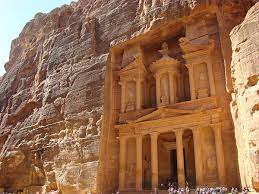

181. Petra, Jordan (400 BCE-100 CE), Nabataean Ptolemaic and Roman, Cut Rock
- Form
- The entire city has been carved into the rock face; this ability of ancient civilizations to carve such structures still confuses modern engineers.
- The treasury’s facade is 24.9 meters wide and 38.77 meters high
- The style most embodied is Hellenistic, which shows the influence of Alexandria which was a great city in the Eastern Mediterranean.
- Ornate Corinthian columns are used throughout.
- Greek, Egyptian, and Assyrian gods on facade
- Content
- The architecture reflects the diversity of thought and culture the Nabateans traded and interacted with.
- Lots of the tombs contain small chambers for burials, which were cut into the stone.
- Architecture features broken pediment and a central circular building on the upper level; again, showing the influence of Alexandria.
- Function
- Functioning city, that had all the necessary systems to be one.
- City was a major trading hub because of its location in the center of early civilization.
- The presence of many tombs lead archeologists to believe that it was a cemetery. However, it was indeed at metropolis.